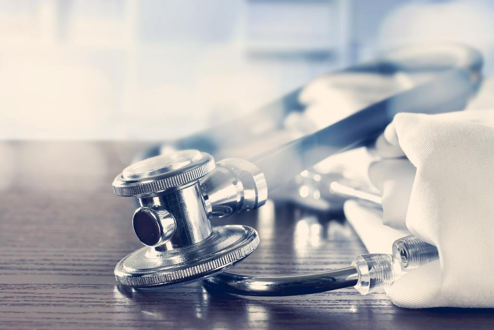
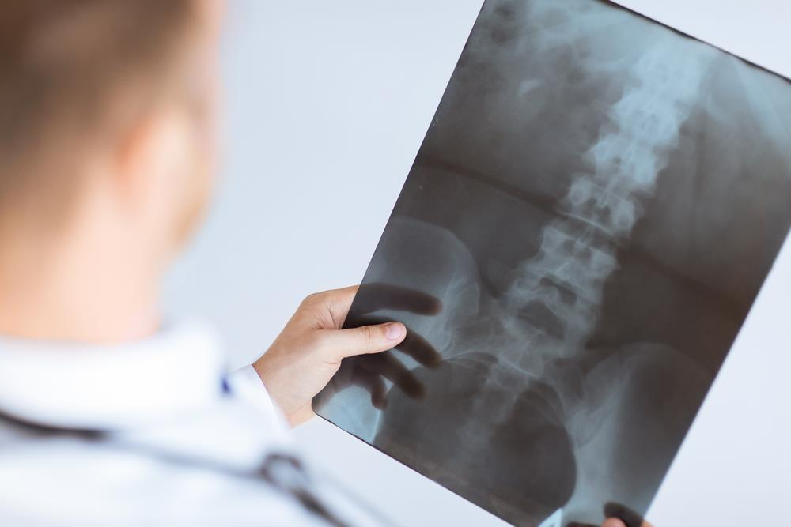
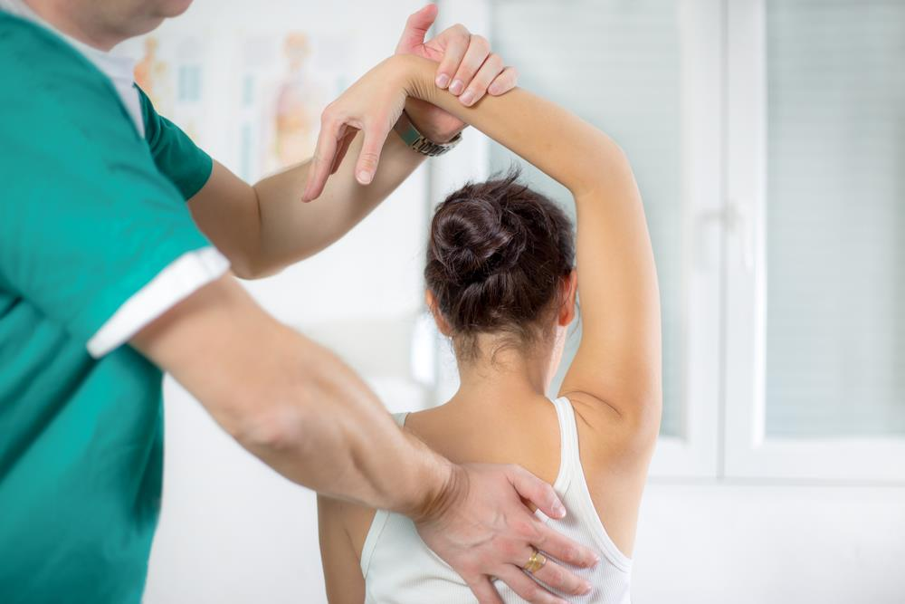
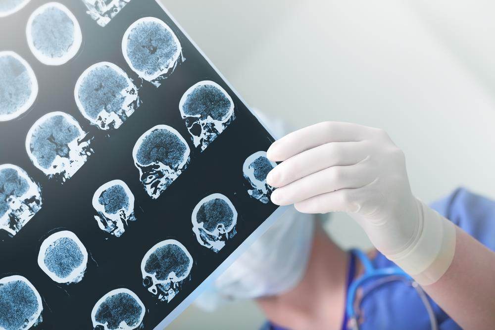
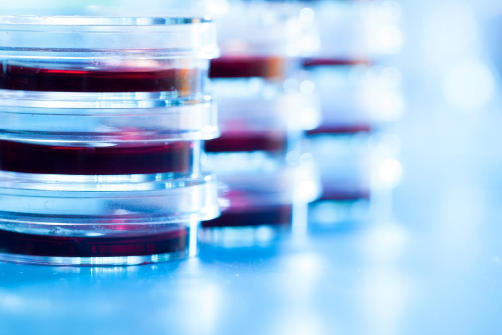
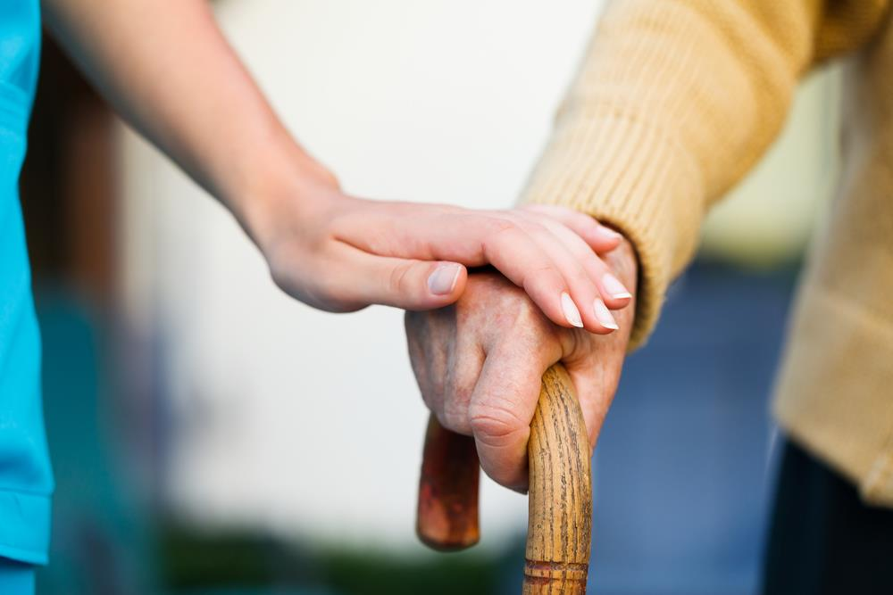

Neurocirugía de la Columna y Cerebro

En Pronostico Positivo realizamos más de 100 cirugías al año y hemos expandido la especialidad en el Perú desarrollando áreas como preservación del movimiento y microcirugía con técnicas mínimamente invasivas de columna, reconstrucciones complejas, y navegación. El doctor Paino es líder en Neurocirugía y Educación, habiendo publicado importantes artículos y realizado conferencias en la especialidad. En la sala de operaciones de la Clínica San Felipe contamos con modernos equipos, instrumentos de precisión y navegación por imágenes. Estamos en capacidad para atender casos simples y extremadamente complejos. Nuestro equipo multidisciplinario trabaja juntos para proporcionar todo el espectro de estrategias en el tratamiento del paciente desde la terapia conservadora, la cirugía si es necesaria y la rehabilitación post operatoria. Nuestros anestesiólogos están preparados en los mejores centros, manejan casos muy delicados con un excelente record sin complicaciones. Estamos comprometidos con una atención de excelencia, enfocados en la seguridad de nuestros pacientes e impecables resultados. Como profesor adjunto de investigación en la Universidad George Washington, avanzamos en el desarrollo de la próxima generación de osteobiológicos para la fusión de lesiones complejas de columna. Somos pioneros en el uso de Monitoreo Intra Operatorio (IOM), esto nos permite medir en todo momento la integridad funcional del paciente durante las cirugías complejas de columna o Cerebro de tal manera que reducimos el riesgo de cortar algún nervio durante la cirugía. En nuestro instituto el monitoreo es realizado por un Neurólogo en la sala de operaciones.
Diagnóstico y Tratamiento del Dolor

El manejo de su dolor es importante en nuestro Instituto. Especialistas en manejo percutáneo del dolor y rehabilitación se juntan para proporcionarle un alivio profundo y duraderos de sus dolores agudos y crónicos. Nuestro equipo trabaja muy integrado para proporcionarle una variedad de intervenciones y estrategias que le permitan recobrar el control de su vida sin dolor. La adición del Dr. Alejandro Castillo a nuestro equipo intervencionista fortalece nuestro programa por lo que podemos presentar excelentes resultados a nuestros pacientes. Manejamos situaciones complejas como Neuralgias de Arnold, Neuropatías del Trigémino, bloqueos epidurales, bloqueos facetarios, etc. Tratamos dolores de cabeza refractarios a otros tratamientos mediante un aborde multidisciplinario. Otros diagnósticos tratados en nuestro Instituto incluyen lumbalgias, cervicalgias , radiculopatías, túnel del carpo y dolor central post derrame cerebral.
Terapia Física / NeuroRehabilitación

Nuestros pacientes se benefician de técnicas innovadoras en Neuro Rehabilitación de la columna vertebral. Rehabilitamos también pacientes con afecciones degenerativas y cerebrales. Manejamos programas que son supervisados directamente por nuestro Director Médico-Neurocirujano.
Tumores cerebrales y de Columna

Nuestro Instituto es uno de los centros de referencia para el nuevo programa de Radiocirugía (Gamma Knife) en el Perú, además el Dr. Paino es Medico Titular del Miami Gamma Knife Institute y referente del Instituto de Gamma Knife de la Universidad de Pittsburg en Pennsilvania, dirigida por el prestigioso Neurocirujano Dr. Douglas Kondziolka. Nosotros sabemos que si los tumores no se tratan a tiempo o son de crecimiento rápido tal vez no respondan bien a radiocirugía por eso algunos pocos casos los pasamos a cirugía. Para los casos quirúrgicos, Cirujanos Oncólogos trabajan con el Dr. Paino para solucionar los casos mas complejos de tumores cerebrales y de columna como el Cordoma de Sacro y otros. En el caso de tumores cerebrales, Dr. Paino tiene varias publicaciones (ver publicaciones) en prestigiosas Revistas de los Estados Unidos con prestigiosos Neurocirujanos como el Dr. Sekhar y El Dr Sen. El Dr. Paino ha estudiado el comportamiento de tumores como los Meningiomas por mas de 15 años y se entrenó en la cirugía de tumores bajo la tutoría del prestigioso Cirujano de Base de Cráneo Dr. Sen.
Investigación

La investigación en el Perú requiere de todos nosotros. El Doctor Paino, es también pionero de la investigación de Células Madre en el Mundo y lidera el laboratorio de alta tecnología de Bioingeniería en la Universidad UTEC. El Gobierno Peruano, mediante su ente Científico CONCYTEC ha creído en él y ha financiado su proyecto a través de FONDECYT. La Cleveland Clinic lo apoya desde el 2015 con intercambio de conocimientos sobre nano partículas. Más recientemente ha equipado nuestro laboratorio con donación de equipos de alta tecnología por lo cuál somos uno de los laboratorios más especializados en cultivos celulares del país según CONCYTEC.
Estamos interesados en avanzar el conocimiento mediante investigación en Ciencias Básicas Biológicas. En un futuro, la unión entre las proteínas de células madre y las nano partículas que pretendemos desarrollar podrían beneficiar directamente a cientos de pacientes quemados y con lesiones de médula en todo el Perú. El Dr. Paino también ha desarrollado toda un área de estudios con relación a terapia genética y células madre para enfermedades degenerativas del cerebro y la columna como ELA, Esclerosis Múltiple, Enfermedad de Tay Sachs, Enfermedad de Sandohoff, etc.
Por favor contactese con nuestra oficina de investigación al 2190258 si desea participar de algunos de esos estudios.
Busque el estudio que le interesa en el Excel que sigue.
Alzheimer y prevención de otros desordenes de la memoria

Médicos y psicólogos de nuestro instituto afiliados al campo de los desórdenes neuro cognitivos trabajan en el Instituto de la Memoria. Atendemos pacientes con pérdida temprana de la memoria o con preocupación de deficiencias hereditarias de memoria. Alteraciones del estado de ánimo , el comportamiento, el lenguaje y la memoria son síntomas que tienen una variedad de causas, nosotros hemos desarrollado programas personalizados que tienen la finalidad de diagnosticar y prevenir alteraciones intelectuales, incluido el Alzheimer. Realizamos evaluaciones completas para asegurar el mejor protocolo para nuestros pacientes. Manejamos los últimos avances en la investigación y/o tratamiento de problemas neuro cognitivos. Nuestros tratamientos también están dirigidos a personas que en la actualidad no presentan problemas de memoria pero están interesadas en cultivar y/o ejercitar las capacidades cognitivas sobreviniendo el deterioro de las funciones intelectuales. Manejamos protocolos de investigación con células mesenquimales para la regeneración del tejido neurológico con el propósito de prevenir la demencia tratándola prematuramente y previniendo su avance. Bajo la dirección del Dr. Paino nuestro centro de prevención es pionero en el Perú. Estamos afiliados con modernos centros de diagnostico por imágenes para el diagnóstico temprano. Junto con nuestros científicos asociados como el Dr. Burton Feinerman en Florida, trabajamos arduamente para desarrollar alternativas de terapia genética para la prevención y tratamiento del envejecimiento temprano del cerebro. Las enfermedades neuro degenerativas afectan a miles de peruanos y sus causas permanecen desconocidas. Nuestras investigaciones se enfocan también en atacar algunos factores de riesgo que pueden prevenir el avance de la demencia como por ejemplo el uso indiscriminado de analgésicos, estrés post traumáticos, enfermedades infecciosas, etc. Asesoramos a nuestros pacientes acerca de factores electromagnéticos (antenas) que puedan causar modificaciones genéticas que aumenten los factores de riesgo de la demencia.